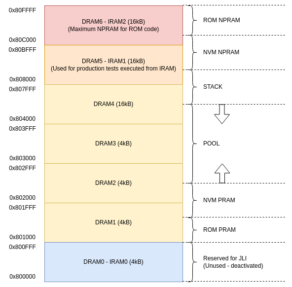
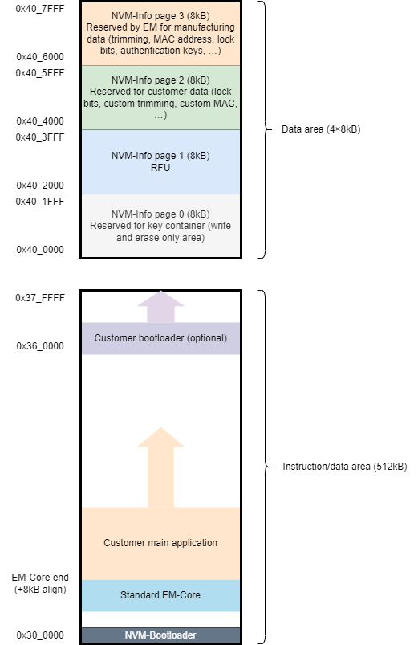

EM9305 Lifecycle Control
The lifecycle of a part describes te entire life of the part, from wafer production to end-user application programming, usage, and update.
This also covers security aspects and the mechanisms used to protect the content and its integrity during the lifetime of a product.
Memory Organization
RAM
The RAM content organization is depicted on the figure below.
{kind=link}
The RAM starts from address 0x800000 to 0x80FFFF which represents 64kBytes.
Some blocks are allocated to contain persistent information that is not lost when the
system goes to sleep mode while other blocks are powered off during sleep period. For
these, any data store within is lost.
Persistent block allocation is done from the bottom toward the end of the RAM, and the
non persistent block allocation is done from the top of the RAM toward the bottom, like
the memory stack management.
ROM, NVM Main and NVM Info
The following picture depicts the overall NVM memory organization.
{kind=link}
NVM-Main section may include a monolitic application or a fragmented application.
The monolitic application includes everything at built time in a single code bloc.
The fragmented approach is based on EM-Core. EM-Core is used as an extension of the ROM and includes additional libraries that can be used by an application.
EM-Core also includes a standalone application which provides useful commands for production testing (e.g. Radio Receiver and Transmitter test).
Boot Sequence, Configuration Mode and NVM Application
For additional information about EM-Core and the lifecycle management of the EM9305, please refer to EM-Core section and the application notes available in Application Notes section
Lifecycle Control
Included in the SDK, the BLEngine tool allows to perform some experiments with the lifecycle of the device.
The BLEngine tool includes a set of procedure that can be accessed on the command line.
Command |
Description |
|---|---|
Authentication |
|
run authenticate |
Run authentication procedure (EM or User) |
Boot Management |
|
run power_cycle |
Perform a power cycle. Requires DVK. |
run restart |
Restart the part in a mode specified as a parameter |
Miscelleaneous |
|
send EMSG_Get_EMCore_Information |
Get EMCore Version and Variant |
send EMSG_Read_Product_Information |
Get Product Information (P3) |
NVM Management |
|
send EMSMM_NVM_Erase_Full |
Erase full NVM (requires EM Authentication) |
send EMSMM_NVM_Erase_Main |
Erase Main area in NVM |
run emsystem_prog |
Write ihex file in NVM |
NVM Info Page Management |
|
run nvm_dump |
Read memory (start address as a parameter) |
run nvm_read |
Read Info Page 2 or 3 and generates a JSON file |
run nvm_write |
Write Info Page 2 or 3 with JSON file as an input |
Example of Usage
The following commands sequence showcases an example on how to use the BLEngine lifecycle fonctionalities. In this example, an EM-Core is programmed along with the NVM-Bootloader. Then, an instruction is sent to the device to start into configuration mode, to start in EM-Core mode, and then to start in the default mode, which is the mode where the customer application is executed. Since no application has been previously written, the execution falls back to EM-Core. Last operation to be done is to program an end user application and then to restart the device in the default mode. This should lead the device to execute the end user application ‘nvm_emb_controller_emcore’.
python blengine_cli.py --port COMYY run emsystem_prog ../../emcore/bin/nvm_bootloader/nvm_bootloader_base.ihex
python blengine_cli.py --port COMYY run emsystem_prog ../../emcore/bin/vA.B.C/standard/emcore_standard.ihex
python blengine_cli.py --port COMYY run restart -m cm
python blengine_cli.py --port COMYY run restart -m emcore
python blengine_cli.py --port COMYY run restart -m default
python blengine_cli.py --port COMYY run emsystem_prog ../../projects/nvm_emb_fit/nvm_emb_controller_emcore.ihex
python blengine_cli.py --port COMYY run restart -m default
With A.B.C = the version of EMCore.